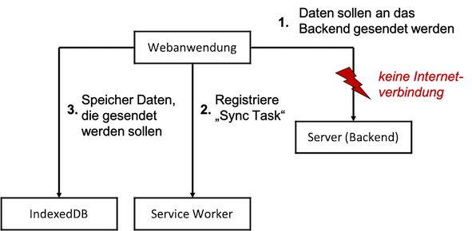
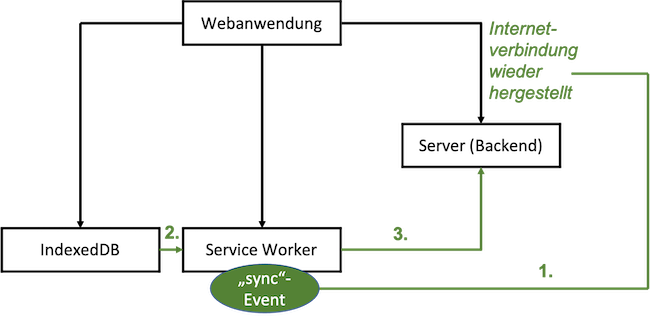
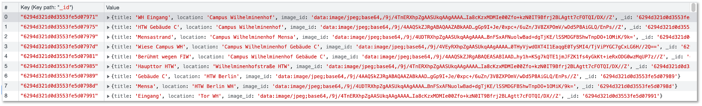
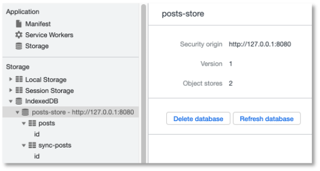
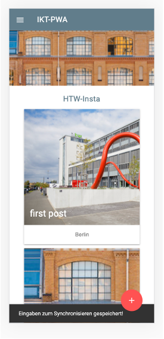

Hintergrundsynchronisation¶
Hint
Aktueller Stand vor Hintergrundsynchronisation:
- Frontend
- Backend
- Collection post
- Collection post.files
- Collection post.chunks
Hintergrundsynchronisation erlaubt die Synchronisation von Daten, selbst dann, wenn die Anwendung offline ist. Diese "Synchronisation" erfolgt natürlich "asynchron". Angenommen, Sie geben offline Daten in die Anwendung ein und wollen diese versenden, z.B. an das Backend, dann wird dieser Request so lange in Ihrer Anwendung gespeichert, bis Sie wieder online sind und erst dann ausgeführt.
Das Situation ist die Folgende:

Es sollen Daten an das Backend gesendet werden, aber die Internetverbindung ist unterbrochen. Deshalb werden die Daten in die IndexedDB gespeichert und im Service Worker wird eine Sync Task registriert.

Sobald die Verbindung wieder steht, wird ein Sync-Event im Service Worker ausgelöst und dieser sendet die Daten an das Backend (POST-Request).
Dadurch, dass der Service Worker diesen POST-Request ausführt (und die Daten dabei mitsendet), kann die Hintergrundsynchronisation sogar dann stattfinden, wenn die Webanwendung bereits geschlossen ist! Deshalb sollten wir einfach immer beim Senden von Daten eine Sync Task registrieren, weil es sein kann, dass die Daten noch gar nicht vollständig gesendet wurden, bevor wir den Browsertab schließen.
Aktueller Stand Daten senden¶
Wir schauen uns zunächst nochmal an, wie wir derzeit die Daten, die wir über das Eingabeformular eingeben, speichern. Wenn wir den Speichern-Button drücken, wird das Submit-Ereignis des Formulars ausgelöst. Dies behandeln wir wie folgt:
239 240 241 242 243 244 245 246 247 248 249 250 251 252 253 254 255 256 257 258 259 260 | |
Wir verhindern zunächst das Standardverhalten beim submit-Ereignis, nämlich das Absenden der Daten und das Neuladen der Seite (Zeile 240). In Zeile 242 prüfen wir, ob die file-variable belegt ist, d.h. ob wir bereits ein Foto aufgenommen haben und in Zeile 246 prüfen wir, ob beide input-Elemente, also sowohl für title, als auch für location einen Wert enthalten. Die JavaScript-trim()-Funktionen entfernt "Leerzeichen" aller Art am Ende des Strings (auch Tabs, Zeilenumbrüche etc.). Sollte eines der beiden (oder beide) Eingabefelder leer sein, beenden wir die Funktion mit einem alert und bleiben in dem Formular. alert ist natürlich nicht so toll, ein toast wäre viel besser, aber wir haben in unserer index.html nur einen toast für das erfolgreiche Speichern vordefiniert. Wenn beide Eingabefelder befüllt und ein Foto (in file) gespeichert sind, schließen wir das Formulatfenster (Zeile 251) und senden die Daten an das Backend (Zeile 259). Die sendDataToBackend()-Funktion sieht wie folgt aus:
212 213 214 215 216 217 218 219 220 221 222 223 224 225 226 227 228 229 230 231 232 233 234 235 236 237 | |
Es wird ein FormData-Objekt erstellt, da wir im body nicht nur Textfelder, sondern auch ein file-Objekt mitschicken. Mit der POST-Methode an das Backend wird dieses befüllte FormData-Objekt gesendet. Da dieses Objekt in der file-Eigenschaft aber ein File-Objekt enthält, die updateUI()-Funktion an dem Schlüssel image_id aber den base64-String des Bildes erwartet, übergeben wir dieser Funktion ein modifiziertes Post-Objekt.
Schauen wir uns auch nochmal die IndexedDB an:

Wir sehen, dass in dem Store posts der IndexedDB die Datensätze mit ihrer _id und in image_id mit ihrem base64-String gespeichert sind. Die _id erhält der Datensatz aber erst durch die MongoDB, wo der Wert für _id automatisch erzeugt wird. Angenommen, wir wollen diese Daten nun zunächst in der IndexedDB zwischenspeichern und erst, wenn die Verbindung zum Backend besteht, an das Backend weiterleiten, benötigen wir in der IndexedDB einen anderen Store, der anders aufgebaut ist, als der posts-Store. Bevor wir uns darum kümmern, erweiteren wir die Submit-Behandlung jedoch erst um die Registrierung an die Sync Task.
Sync Task registrieren¶
Wenn wir das Formular absenden und die in dem Formular eingegebenen Daten speichern wollen, steuern wir dies nun über eine Sync Task. Diese Sync Task sorgt dafür, dass die Daten (irgendwann) tatsächlich gespeichert werden, auch wenn wir gerade offline sind oder während des Speicherns offline geschaltet werden. Für eine solche Sync Task existiert die SyncManager-API. Wenn Sie auf diesen Link klicken, dann sehen Sie, dass die SyncManager-API
- nur 2 Methoden besitzt, nämlich
register()undgetTags()und - dass sie bis jetzt leider nur von Chrome und Edge unterstützt wird. Allerdings auch in allen Android-Geräten (mit Chrome oder WebView) und somit trotzdem eine große Reichweite besitzt.
Wir erweitern die Anmeldung an den Listener für das submit-Event zunächst wie folgt:
239 240 241 242 243 244 245 246 247 248 249 250 251 252 253 254 255 256 257 258 259 260 261 262 263 264 265 266 267 | |
In diesem kleinen Code-Stückchen sind einige Dinge beachtenswert. Erstens, wird die SyncManager-API vom Service Worker verwendet, aber wir sind hier ja in feed.js, also in der Webanwendung. Wir können die Registrierung an die Sync Task nicht einfach in die sw.js schreiben, da das auslösende Ereignis der Registrierung (nämlich das Absenden des Formulars) in der Webanwendung stattfindet und wir dieses Ereignis in feed.js behandeln. Wir benötigen in feed.js also einen Zugriff auf den Service Worker.
Dazu fragen wir zunächst, ob der Service Worker überhaupt durch den Browser unterstützt wird und auch, ob die SyncManager-API durch den Browser unterstützt wird. Dies geschieht in Zeile 260. Dort fällt auf, dass der Service Worker eine Eigenschaft von navigator ist, die SyncManager-API eine Eigenschaft von window. Window ist das Fenster, das ein DOM Dokument (also eine Webanwendung) enthält. Eine Eigenschaft von window ist navigator (also window.navigator). Das Navigator-Objekt liefert Informationen über den Browser, in dem die Anwendung ausgeführt wird.
Die (readonly)-Eigenschaft ready eines Service Workers ist eine Promise, welche resolved ist, sobald der Service Worker active ist. Siehe hier für ready. Über diese Promise erlangen wir Zugriff auf den Service Worker in unserer Webanwendung. Die sync-Eigenschaft ist in dem Interface ServiceWorkerRegistration definiert. Die register()-Funktion ist eine der beiden Methoden aus der SyncManager-API und registriert eine Sync Task. Jeder Sync Task wird ein tag zugewiesen (ähnlich einer id). Über diesen tag kann später auf diese Sync Task zugegriffen werden. Wir haben dieser Sync Task den tag 'sync-new-post' gegeben.
Die Sync Task ist nun registriert. Allerdings weiß der Service Worker noch gar nicht, was er bei dieser Sync Task überhaupt synchronisieren soll. Das definieren wir jetzt.
Daten in die IndexedDB speichern¶
Die Daten, die (später) synchronisert werden sollen, werden zunächst in der IndexedDB gespeichert. Dort können Sie so lange bleiben, bis die Webanwendung (wieder) online ist, um dann an das Backend durch den Service Worker gesendet zu werden. Dazu erzeugen wir uns ein passendes JavaScript-Objekt post:
239 240 241 242 243 244 245 246 247 248 249 250 251 252 253 254 255 256 257 258 259 260 261 262 263 264 265 266 267 268 | |
Die id wurde hinzugefügt, um einen eindeutigen Identifier für den post in der IndexedDB zu haben (keyPath). Damit der Wert auch eindeutig ist, wird der Zeitstempel zum String umgewandelt und verwendet (Zeile 260).
Diesen post wollen wir nun in die IndexedDB speichern. Dazu steht uns aus der db.js die Funktion writeData() zur Verfügung. Diese Funktion erwartet als ersten Parameter den Store, in dem wir den post speichern wollen. Derzeit haben wir einen Store in unserer IndexedDB definiert, den Store posts:
2 3 4 5 6 7 8 9 10 11 12 13 14 | |
Diesen Store (ursprünglich hieß die Variable noch store, wir haben hier bereits store1 daraus gemacht, könnte aber auch store bleiben) verwenden wir aber, um unsere Daten aus der Datenbank/dem Backend zu cachen. Wir verwenden ihn zum Schreiben und Lesen der Daten aus unserer Datenbank. Für das Synchroniseren der neuen Daten benötigen wir deshalb einen weiteren Store. Dazu kopieren wir einfach die Store-Erstellung in der db.js und nennen den neuhinzugekommen Store sync-posts (wir nennen die id hier auch id und nicht _id):
2 3 4 5 6 7 8 9 10 11 12 13 14 15 16 | |
Gleichzeitig habe ich auch noch ein bisschen den Code gekürzt. Die Kommentare sind raus und das autoIncrement: true ist auch Standard, deshalb muss es nicht mit angegeben werden. Wenn wir die Anwendung nun ausführen, sehen wir unter IndexedDB, dass ein weiterer Store hinzugekommen ist:

Diesen Store verwenden wir nun, um die neuen post-Daten in die IndexedDB zu schreiben:
239 240 241 242 243 244 245 246 247 248 249 250 251 252 253 254 255 256 257 258 259 260 261 262 263 264 265 266 267 268 269 270 271 272 273 274 275 | |
Die Registrierung der Sync Task ist nur dann sinnvoll, wenn die Daten auch tatsächlich in der IndexedDB gespeichert wurden. Deshalb erfolgt die Registrierung in dem resolved-Pfad der writeData-Promise.
Jetzt können wir noch unseren toast verwenden, den wir in der index.html definiert haben. Hierbei handelt es sich um eine Material Design Lite-Komponente Snackbar:
98 99 100 101 | |
In der feed.js verketten wir die Promise für das Schreiben der Daten in die IndexedDB weiter und bestätigen dies mit einer Snackbar-Nachricht:
239 240 241 242 243 244 245 246 247 248 249 250 251 252 253 254 255 256 257 258 259 260 261 262 263 264 265 266 267 268 269 270 271 272 273 274 275 276 277 278 279 280 | |
Beachten Sie, dass Sie das return in Zeile 271 einfügen, damit die Promise verkettet werden kann. Nachdem Sie nun Daten in das Formular eingegeben und auf Speichern geklickt haben, erscheint für 2 Sekunden unten eine Bestätigungsnachricht:

Ein Fallback¶
Wir haben festgelegt, was passieren soll, wenn der Browser Service Worker und die SyncManager-API unterstützt. Wir sollten jedoch ein Fallback einbauen für den Fall, dass das nicht der Fall ist. Viel bleibt uns für diesen Fall nicht übrig, zu tun. Wir können nur versuchen, die Daten, die wir in das Formular eingegeben haben, sofort an das Backend zu senden. Wir fügen dazu den Aufruf der sendDataToBackend()-Funktion im else-Fall für die Behandlung des submit-Ereignisses auf:
239 240 241 242 243 244 245 246 247 248 249 250 251 252 253 254 255 256 257 258 259 260 261 262 263 264 265 266 267 268 269 270 271 272 273 274 275 276 277 278 279 280 281 282 | |
Dieser Fallback lässt sich ausprobieren, indem man dafür sorgt, dass die Bedingung if('serviceWorker' in navigator && 'SyncManager' in window) false ist (z.B. && false). Nun kümmern wir uns darum, dass das sync-Ereignis im Service Worker behandelt wird. Das geschieht immer dann, wenn der Service Worker erkennt, dass die Internetverbindung wieder hergestellt wurde.
Ereignisbehandlung des sync-Events¶
Wenn der Service Worker erkennt, dass die Verbindung zum Internet wieder hergestellt ist, wird automatisch das sync-Event ausgelöst. Dieses Ereignis wird auch dann ausgelöst, wenn die Internetverbindung besteht und eine Sync Task registriert wurde. Wir wollen in diesem Fall die Daten aus der IndexedDB an das Backend senden. Dazu erweitern wir die sw.js um die Behandlung des sync-Ereignisses. Wir fügen diese Ereignisbehandlung an das Ende der sw.js ein:
98 99 100 101 102 103 104 105 106 107 108 109 110 111 112 | |
Wir fügen dem Service Worker also einen EventListener hinzu, wie wir das bereits von den anderen Ereignisbehandlungen im Service Worker kennen. Das sync-Ereignis gibt auch die tags zurück, unter denen Sync Tasks gespeichert wurden. In unserem Fall war der verwendete tag sync-new-post. Wir verwenden auch erneut event.waitUntil(), um sicherzustellen, dass die Ereignisbehandlung nicht eher verlassen wird, bis alle definierten Anweisungen darin vollständig abgearbeitet wurden. Als erstes greifen wir dann lesend auf die IndexedDB unter Verwendung der readAllData()-Methode aus der db.js.
Diese Methode gibt ein Array aller gespeicherten Datensätze in der IndexedDB im Store sync-posts zurück. Mit einer for-Schleife betrachten wir jeden einzelnen Datensatz. Wir "wissen", dass ein solcher Datensatz ein JavaScript-Objekt mit den Eigenschaften id, title, location und image_id ist.
Wir erweitern diese Behandlung nun um den Code, den wir zuvor für die Funktion sendDataToBackend() verwendet haben. Wir senden die Daten an das Backend. Dazu können wir uns den Code von der Fallback-Implementierung kopieren und anpassen:
98 99 100 101 102 103 104 105 106 107 108 109 110 111 112 113 114 115 116 117 118 119 120 121 122 123 124 125 126 127 128 129 130 131 | |
Für die Daten, die an das Backend gesendet werden, wird nun, im Gegensatz zum Fallback, auf data zugegriffen, da wir ja die Daten senden, die aus der IndexedDB ausgelesen werden. Wenn die Daten erfolgreich an das Backend übertragen worden sind (response.ok in Zeile 120), dann werden diese Daten mithilfe der deleteOneDate()-Funktion (aus db.js) gelöscht, da sie in der IndexedDB nicht weiter benötigt werden. Der Store sync-posts ist ja "nur" dazu da, die Daten so lange zwischenzuspeichern, bis sie ins Backend (in die persistente Datenbank) gesendet sind. Sollte stattdessen ein Fehler auftreten, wird er mithilfe von catch() abgefangen und dort ausgegeben.
Wenn wir nun neue Daten in das Formular eingeben und auf Speichern klicken, werden die Daten zum Backend gesendet - eventuell nicht gleich, sondern erst dann, wenn die Anwendung (und somit das Backend) wieder online ist.
Das Ausprobieren der späteren Hintergrundsynchronisation erfolgt am Sichersten dadurch, dass Sie den Rechner komplett vom WLAN trennen. Das Offline-Schalten des Service Workers genügt dazu häufig nicht (bzw. wird beim Online-Schalten dann manchmal kein sync-Ereignis ausgelöst).
- Schalten Sie das WLAN an Ihrem Rechner aus.
- Geben Sie über das Formular der Anwendung neue Daten ein und drücken Sie auf den
Speichern-Button. - Schauen Sie in den Developer Tools unter
IndexedDBin den Storesync-posts. Dort sollten die neuen Daten nun gespeichert sein. - Schalten Sie das WLAN wieder ein. Auf der Konsole erscheint die
fetch-Nachricht fürPOST "http://localhost:3000/posts". - In der persistenten Datenbank stehen die neuen Daten.
- Nach einem Reload der Anwendung werden diese Daten aus der Datenbank über das Backend gelesen (ohne Bilder) und erscheinen als weitere
Cards.
Success
Wir haben die Hintergrundsynchronisation implementiert! Das Senden der Daten an das Backend erfolgt über das Registrieren einer Sync Task und dem (zwischen-)Speichern der zu sendenden Daten in der IndexedDB. Durch die Ereignisbehandlung des sync-Ereignisses werden diese Daten an das Backend (und darüber in die Datenbank) geschrieben. Das sync-Ereignis wird ausgelöst, wenn der Service Worker online und eine Sync Task registriert ist. Wir können nun Daten eingeben und speichern, egal, ob wir online oder offline sind. Die Anwendung kann sogar geschlossen sein und trotzdem synchronisiert der Service Worker.